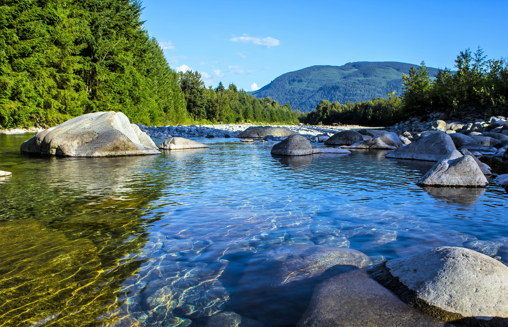

Mengapa air bersih itu penting?
Edited by May 26th, 2024
Source Image: https://www.theregreview.org/2019/02/27/kamhi-benefits-clean-water-act/
Air bersih adalah air yang murni dan jernih tanpa tercampur oleh zat lain, bahkan dalam jumlah yang kecil. Air bersih yang dimaksud ini sangat penting untuk berbagai alasan yang didasari dengan kesehatan dan kesejahteraan manusia serta keberlangsungan lingkungan. Beberapa alasan mengapa air bersih itu penting :
1. Kesehatan dan kebutuhan sehari-hari
- Kesehatan : Kesehatan makhluk hidup bergantung pada jenis air yang digunakannya, apakah jenis air yang digunakan adalah air bersih atau air kotor. Air bersih dapat mencegah terjadinya berbagai penyakit bagi makhluk hidup, seperti kolera, diare, dan penyakit parasite lainnya. Air bersih juga dapat memperlancar proses kinerja organ pada makhluk hidup dan menjaga kualitas dari organ dalam tubuh.
- Kebutuhan sehari-hari : Air bersih sangat bermanfaat untuk kebutuhan sehari-hari, seperti memasak, mencuci, mandi, dan berbagai aktivitas lainnya. Kualitas air yang bersih dapat dipastikan aktivitas yang dilakukan akan aman dan efektif.
2. Pertanian
- Irigasi : Dalam bidang pertanian, tumbuhan yang diurus oleh petani petani membutuhkan air untuk proses irigasi, agar mendapatkan hasil panen yang maksimal.
- Kualitas Tanah : Air bersih berperan juga pada kualitas tanah, kualitas tanah yang subur akan membuat produktivitas tumbuhan yang ditanam menjadi stabil dan kualitas tumbuhan menjadi baik.
3. Perternakan
- Konsumsi Hewan : Hewan ternak membutuhkan air bersih untuk minum. Air yang tercemar dapat menyebabkan penyakit pada hewan ternak, yang dapat mengurangi produktivitas dan meningkatkan angka kematian hewan.
- Kebersihan : Air bersih juga digunakan untuk membersihkan kandang dan peralatan peternakan, yang penting untuk mencegah penyebaran penyakit di antara hewan.
4. Industri
- Proses Produksi : Banyak industri yang memerlukan air bersih dalam proses produksi mereka, baik sebagai bahan baku maupun untuk pendinginan, pembersihan, dan berbagai keperluan operasional lainnya.
- Kualitas Produk : Kualitas air yang digunakan dalam industri berpengaruh langsung pada kualitas produk yang dihasilkan. Air yang terkontaminasi dapat merusak produk dan menurunkan standar kualitas.
5. Ekosistem
Kehidupan di dalam air: Air bersih penting untuk kelangsungan hidup berbagai organisme yang hidup dalam air. Pencemaran air dapat menyebabkan kerusakan habitat, penurunan populasi ikan, dan gangguan pada keseimbangan ekosistem perairan.